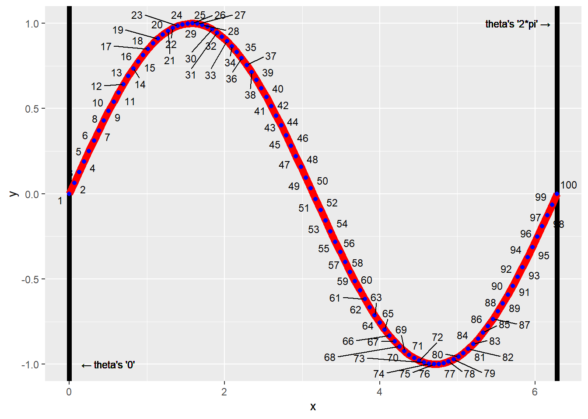
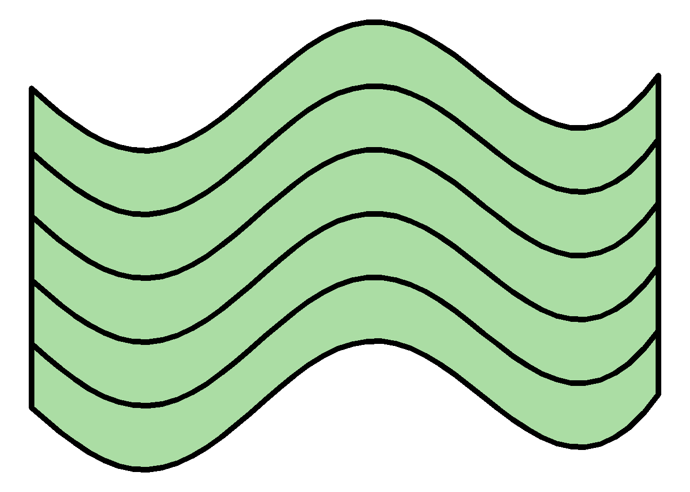
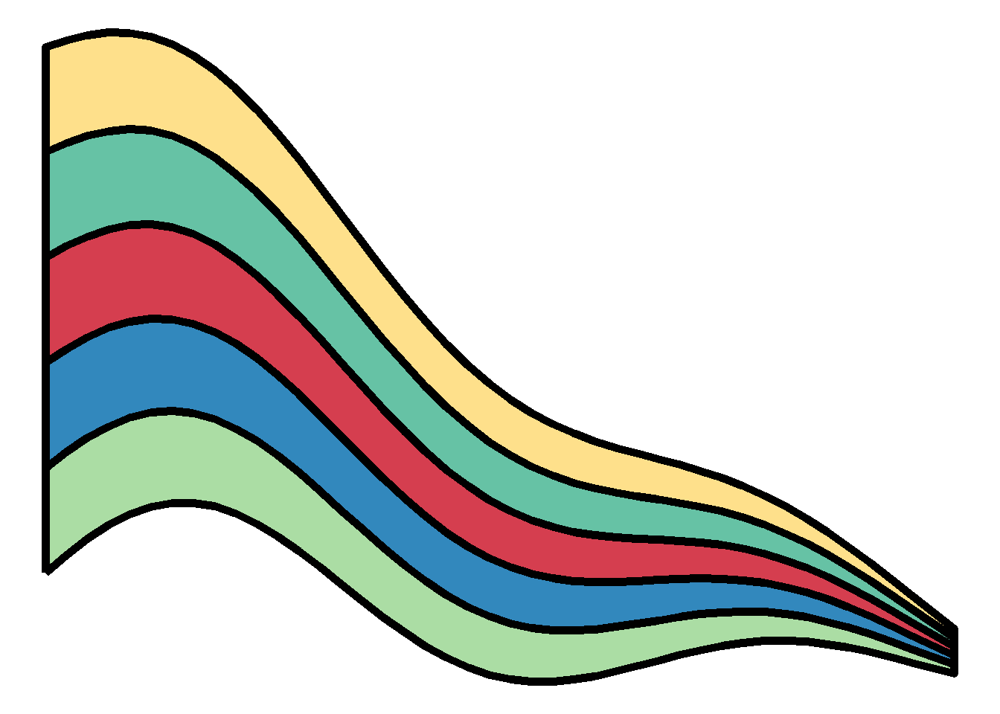

An Rtistry tutorial in ggplot about making waves in the R programming language.
r
rtistry
data art
ggplot2
r walkthrough
statistical programming
Author
Meghan Harris
Published
November 24, 2021
The Original “Wave Patch” Piece Made in R
A little while ago, I made an Rtistry piece that I named “Wave Patch.” (Shown above). There seemed to be some interest in providing a tutorial on making waves like I did in Wave Patch. I’ll use this post to discuss the basic concepts behind making one set of waves that will hopefully set the reader up to take that knowledge, expand upon it, and make their own Rtistry!
While things will always be explained when appropriate, this tutorial assumes that you have experience working in ggplot in the tidyverse, working with ggplot aesthetics, and creating functions.
Don’t want to read and just want the code? The full code for this tutorial is on my GitHub Repo here.
Let’s Start with a Trig Refresher!
So, confession time. I have never taken a trigonometry class in my life! The closest I got was taking geometry in high school and I got a C. BUT, I was still able to make this piece, so no matter your math background, you can too! These waves are made with sine waves. You might be familiar with them already. We can code for basic sine waves in ggplot by setting up our data appropriately:
── Attaching core tidyverse packages ──────────────────────── tidyverse 2.0.0 ──
✔ dplyr 1.1.4 ✔ readr 2.1.5
✔ forcats 1.0.0 ✔ stringr 1.5.1
✔ ggplot2 3.5.1 ✔ tibble 3.2.1
✔ lubridate 1.9.4 ✔ tidyr 1.3.1
✔ purrr 1.0.2
── Conflicts ────────────────────────────────────────── tidyverse_conflicts() ──
✖ dplyr::filter() masks stats::filter()
✖ dplyr::lag() masks stats::lag()
ℹ Use the conflicted package (<http://conflicted.r-lib.org/>) to force all conflicts to become errors
#Let's Start with a Trig Refresher#========================#theta <-seq(from =0,to =2*pi, length.out =100)sine <-tibble(x = theta,y =sin(theta),label =1:length(theta))
… and plotting it like this:
# A basic sine curve======sine %>%ggplot(aes(x=x,y=y))+geom_line(color="red", size =3)
Warning: Using `size` aesthetic for lines was deprecated in ggplot2 3.4.0.
ℹ Please use `linewidth` instead.
All we are doing with this code is setting up a sequence of points in our theta variable. Using the seq() function. We’re telling R “Create 100 numbers between and including the values 0 to 2pi (6.283185). When we go to plot this data, we put theta on one axis (in this case, the x variable because I want my wave to be drawn horizontally on the plane), and then place the sine values of theta on the other axis. Note that these values don’t have to be 0 and 2pi. In the next section, we will switch this up. But let’s just take one more look at this wave with some labels attached:
# A basic sine curve with more detail pointed out======sine %>%ggplot(aes(x=x,y=y, label = label))+geom_vline(xintercept =0, size =2)+geom_vline(xintercept =2*pi, size =2)+geom_line(color="red", size =3)+geom_point(color ="blue")+ ggrepel::geom_text_repel(max.overlaps =20, size =3)+geom_text(aes(x =0,y =-1),label =paste(sprintf('\u2190'),"theta's '0'"),nudge_x = .5,size =3)+geom_text(aes(x =2*pi,y =1),label =paste("theta's '2*pi'",sprintf('\u2192')),nudge_x =-.5,size =3)
Warning in geom_text(aes(x = 0, y = -1), label = paste(sprintf("←"), "theta's '0'"), : All aesthetics have length 1, but the data has 100 rows.
ℹ Please consider using `annotate()` or provide this layer with data containing
a single row.
Warning in geom_text(aes(x = 2 * pi, y = 1), label = paste("theta's '2*pi'", : All aesthetics have length 1, but the data has 100 rows.
ℹ Please consider using `annotate()` or provide this layer with data containing
a single row.

If needed, take some time to review the more detailed code/plot of the labeled sine wave. Understanding how data is selected to create the visuals on the plot will set you up for understanding how you can manipulate these visuals in the future.
Make the Transition from Basic Waves to Pretty Waves
OK. So we know how to make a basic sine wave. How do we turn that into a “pretty” wave? There’s multiple ways to achieve this, but we’ll just go through the way that the wave patch image is built from. In order to have more creative control over our wave’s aesthetics, we’ll turn our sine wave into a polygon object. First, we can start by setting our theta. Let’s change it up. This time instead of calling the length.out argument, we’ll call the by argument. The seq() function will automatically calculate all numbers between -.4 and -1.5*pi (-4.712389) by a value of -.1:
# Starting the transition to a pretty wave====##Setting up our "range" on the x axis for horizontal waves=====wave_theta <-seq(from =-.4,to =-1.5*pi, by =-.1)
We can now take our new theta and make a tibble, (data frame) for our waves. Say we don’t want these basic sine waves though. We can play around with our x variable when creating the data frame to get some interesting results. We need to also remember to arrange() our frame by the x variable. Or else we’ll run into plotting issues in the future. I’ll speak more on this later. Let’s call this new tibble, curve_top:
##Creating the "top" of our wave polygon====curve_top <-tibble(x = wave_theta,y = (sin(x)*cos(wave_theta))+exp(x*2)) %>%arrange(x)
What we have now is a data frame that contains points for a single sine wave that’s been manipulated a bit by multiplying the sine of x with the cosine of our new theta and then added to the logarithmic value of x squared. If you’re wondering how I figured this out, the answer is by trial and error. While I have taken calculus and geometry classes, I have a very basic understanding of what type of functions create what type of visuals. This basic knowledge is just enough to create some great visuals!
So, let’s look at just this “top” of the wave we made:
Nicer! But still basic. We need some dimension. We want to make a polygon, so now we need to add some sides and a bottom to make a complete polygon. There are many ways to go about doing this, but let’s try to create these pieces one by one for clarity. Let’s add a side to the right of this wave. To do so, first we find the maximum point of the x variable with the max() function, and subset the curve_top data frame with just that point in it:
##Grab the max X value in the wave from the top wave====max_x_point <- curve_top[which(curve_top$x ==max(curve_top$x)),]
Using this row we’ve pulled out, we can simply add a row that includes the “bottom” of our side (because the top position of the side is just the last (max x) point in our wave. Because we want our side to connect to a “bottom” piece, we’ll use the add_row() function to increase the length of our side down the y axis by 0.5. Because of the way polygons are drawn, we should also set the option to have the “side” data rearranged in descending order of the y variable (since we want to move “down” on our plot):
##Create a subset of curve_top to create a "side" of the wave====curve_side_right <- max_x_point %>%add_row(max_x_point -c(0,0.5))%>%arrange(desc(y))
Let’s see our addition:
Great! Next, we connect a bottom curve to the side we just created. For simplicity, we’ll use a copy of curve_top that has its y values decreased by 0.5 (the same length as our side we just made. Because of how geom_polygon() will draw onto the plot, we should arrange the x values in the decreasing order for this part of the wave as well:
##Create a copy of the curve_top dataset with the y values decreased by .5====curve_bottom <- curve_top %>%mutate(y = y -0.5) %>%arrange(desc(x))
Let’s take a look:
##Viewing the top curve, curve_side_right, and curve_bottom together====curve_top %>%ggplot(aes(x=x, y=y))+geom_path()+geom_path(data = curve_side_right, aes(x=x, y=y), inherit.aes =FALSE)+geom_path(data = curve_bottom, aes(x=x, y=y),inherit.aes =FALSE)
Aww yeah. Getting closer. Finally, we can close this up by adding the final left side. We can finish this by doing the exact same thing we did for the right side, only this time we’ll subset out the minimum value with the min() function. This time we want to arrange the y variable in ascending order because we want to move “up” the plot. Our code is essentially going to be set up to draw the polygon in a clockwise fashion starting with the top curve:
##Grab the min X value in the wave from the top wave====min_x_point <- curve_top[which(curve_top$x ==min(curve_top$x)),]##Create a side that will connect curve_top and curve_bottom on the left side====curve_side_left <- min_x_point %>%add_row(min_x_point -c(0,0.5)) %>%arrange(y)
Now that we have all of our sides in our wave, we can actually just bind all of these data frames together into one data frame with the bind_rows() function and then view it:
##Slap all of them together into one dataframe IN ORDER (top,right,bottom,left)wave <-bind_rows(curve_top,curve_side_right,curve_bottom,curve_side_left)##View the entire thing====wave %>%ggplot(aes(x=x, y=y))+geom_polygon()
YESSSS!! (I’m way t00 excited, I know.) If you now try to visualize creating this shape in a clockwise fashion, it might make sense why we arranged those different variables. The following rules will become extremely important once we get further into this piece:
curve_top is drawn from left to right. The x variable needs to be in ascending order to go right.
curve_side_right is drawn from top to bottom. The y variable needs to be in descending order to go down.
curve_bottom is drawn from right to left. The x variable needs to be in descending order to go left.
curve_side_left is drawn from bottom to top. The y variable needs to be in ascending order to go up.
This is also visualized with notations below:
Keep in mind that the true behavior of geom_polygon() is not to go in a clockwise fashion, but it’s actually to follow the order of the data you supply to it. Because of the order in which the sides of the waves are created in this example, this is one possible version that makes sense. All visuals made with geom_polygon() do not need to be ordered in a clockwise fashion.
Ok so we have one wave, but the wave patch image has multiple patterns of these waves. While I won’t recreate the whole thing, I can plant the seed. Our next step is to make a function to help us with this.
Creating Functions for the Waves
We could take our waves data frame and repeatedly change our ggplot code to create different layers of these waves, but, we can save a lot of work by creating a custom function for this purpose. If you need to brush up on functions and iterations in R programming, you can always check out “R for Data Science” by Hadley Wickham and Garrett Grolemund. Specifically, chapters 19 and 21 on Functions and Iterations, respectively.
What we want to do is take our waves data frame that we’ve already created and iteratively make new data frames with slightly different y values and combine all of that together into one data set. This will create different wave layers on a single plot and streamline our code because we only have to refer back to one data frame instead of multiple ones.
We’re going to create a function called wave_maker that can do this below:
# Creating a function for iterations====wave_maker <-function(n, wave_df){#Creating an empty list to store our multiple dataframes(waves)# wave_list<-list()#Creating a for loop to iteratively make "n" amount of waves#for(i inseq_along(1:n)){ wave_list[[i]] <- wave_df %>%mutate(y = y - (0.5*i),group = i) }#returning the completed data frame to the environment#return(bind_rows(wave_list))}
Great! This is a smaller function that can probably be more efficient, but it gets the job done. Let’s break it down:
First we create the function with the function() function (lol). Inside we are supplying two arguments. n which is the amount of wave layers that we want to draw on the ggplot and wave_df, which will be the initial wave data frame we created earlier.
Next, we create an empty list that will be used to store each n (layer) of waves/data frames.
Next, we initialize the “for-loop” to run through n amount of iterations. For each iteration, we will mutate the y variable of the original wave data frame, and add a group variable that will automatically be identified by each iteration (i)
Finally, we have the function return a nice, tidy data frame with all the data for each of our n layers.
Now we can actually create our data frame with this function like so:
# Creating the final data frame used for plotting====wave_layers <-wave_maker(5, wave)
We can plot this as is, or we can add some color! Let’s add some color using the RColorBrewer package. Because we made 5 layers back in our wave_maker function, we’ll have five polygons to fill. Let’s just randomly pick 5 colors from the Spectral palette in the package and set them in a vector called colors_pal. Because we want to make sure enough color values are applied to all of the points in the wave_layers data frame, we can use the rep() function to repeat the values enough times to fill all of the polygons. I’ll touch more on those specifics in a bit:
# Picking a random color palette from RColorBrewer for the waves#We made 5 waves, so let's pick 5 colors#colors_pal <-sample(RColorBrewer::brewer.pal(10,"Spectral"),nrow(wave_layers)/nrow(wave), replace =TRUE)
Finally, we can plot our new waves!
# Final Plotting====wave_layers %>%ggplot(aes(x=x,y=y, group = group))+theme_void()+theme(plot.background =element_rect(fill ="#ffffff", color =NA))+geom_polygon(color ="black", size =2, fill =rep(colors_pal, each =nrow(wave)))
Fantastic! Because I didn’t set a seed, your colors might be different than mine, but that’s OK. While I won’t go into full detail because this tutorial expects you to already be familiar with ggplot and its aesthetics, I will call attention to the group aesthetic and the color aesthetic in this example. If you recall the wave_maker function, it automatically created a new variable called group in each iteration of our wave data frame. The group aesthetic is our way of telling R and the ggplot system that we want to keep data points that are associated with the same group value drawn together. This is how we can get our waves and their colors mapped as intended. If we didn’t set this group argument, our plot would look a little different:

You should also note the color aesthetic in the geom_polygon() function. Although we only have 5 layers, we’re actually supplying 460 values to this layer. This is because we need to apply a color value for each point that makes up a polygon. Because our initial wave data frame has 92 rows (or points) in it, if we want to color one wave we’d need 92 color values. If we want to color 5 waves we’d need 92 * 5 which is the 460. This code is set up for reproducibility, so as you change your n in the wave_maker function, it should continue to cycle through whatever color values you supply it.
Depending on how you change the coding for the color palette, you may need to be mindful of the logic needed as you start to explore different possibilities. Always try to make it easier on yourself by coding for reproducibility. I’m sure there are more efficient ways than the methods I’ve presented here but it’s a good start!
Go Forth and Make Some Waves!
OK! You have the foundation needed to make some awesome rtistry! Please feel free to take this wave maker function and explore. Use it as an opportunity to practice ggplot iterations, functional programming, building polygons, and more! Not much is required to even make drastic changes to how these waves look. For example, changing how the y variable is mapped in the aes() argument changes the wave:
# You've got the foundation you need now! Go forth and make some awesome waves! Manipulating these aren't too bad##An Example: - Simply changing the y value in the aes call creates a different set of waves :)#wave_layers %>%ggplot(aes(x=x,y=y*x, group = group))+theme_void()+theme(plot.background =element_rect(fill ="#ffffff", color =NA))+geom_polygon(color ="black", size =2, fill =rep(colors_pal, each =nrow(wave)))

Are you going to make some awesome waves? Or feel the need to strip this code apart and make it your own? Please feel free to do so! If you’re on Twitter and want to share your creations, don’t hesitate to share with the #rtistry tag or even mention me if you want to (@meghansharris) I’d absolutely love to see what you create!
![]()